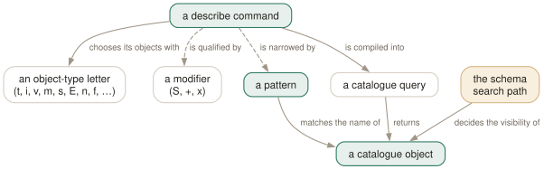

Day 03
Relations, and patterns
One grammar behind forty-five describe commands, and the pattern language that narrows them.
By the end of today you can
- decompose any
\d-something command into object letters, modifiers and a pattern - write a pattern that finds a table in a schema you are not currently searching
- explain why
\dtcan show nothing while the table demonstrably exists
Forty-five commands, one grammar
The \d family looks like the part of psql you have to memorise. It is not: it is a small grammar, and once you can read it you can guess commands you have never used. A describe command is \d, then one or more letters naming the kind of object, then optional modifiers, then an optional pattern.
The letters are mnemonic once you know they were chosen under pressure. t table, v view, m materialized view, i index, s sequence, n namespace (schema), f function, T type, u user. The awkward ones spell out a phrase instead: \des is external servers, \det external tables, \dew external wrappers, and the \dA family is access methods.
Where the letters make sense together they combine. \dti lists tables and indexes in one listing, with an extra column saying which table each index belongs to:
testdb=# \dti
List of relations
Schema | Name | Type | Owner | Table
--------+---------------------+-------+----------+----------
public | my_table | table | postgres |
public | my_table_second_idx | index | postgres | my_table
(2 rows)

\dt.Three modifiers, and what they cost
S- include system objects. Without it you see only user-created things, which is almost always what you want —
\dfSlists some three thousand built-in functions. +- verbose. For relations that means persistence, access method, size and description in listings, or storage, compression and per-column comments when describing one table. The size is a physical lookup per relation, so
\dt+is materially slower than\dton a big database. x- show this listing in expanded mode, as if
\xwere on for one command. Day 5 explains expanded mode; the placement rule is here because it is a\dquirk. It goes afterSor+, never straight after\d.
Describing one table is where + earns its keep, because psql assembles it from half a dozen catalogues and shows you constraints, indexes, triggers and rules that no single query would have given you:
testdb=# \d+ my_table
Table "public.my_table"
Column | Type | Collation | Nullable | Default | Storage | Compression | Stats target | Description
--------+---------+-----------+----------+---------+----------+-------------+--------------+----------------------
first | integer | | not null | 0 | plain | | |
second | text | | | | extended | | | the spelled-out name
Indexes:
"my_table_second_idx" btree (second)
Not-null constraints:
"my_table_first_not_null" NOT NULL "first"
Access method: heap
Patterns are regexes wearing a glob costume
The pattern argument looks like shell globbing and is not. Underneath it is a regular expression with three characters rewritten before it is used: * becomes .*, ? becomes ., and $ is matched literally. Everything else regular expressions can do, patterns can do.
Which means all of these work:
\dt orders -- exactly this name, in a visible schema
\dt ord* -- anything beginning with ord
\dt *order* -- the one you use when you half-remember the name
\dt [a-c]* -- a character class: a, b or c to start
\dt ?rders -- exactly one character, then rders
\dt app.o* -- schema pattern . object pattern
\dt *.orders -- this object name in any schema
\dt *.* -- everything, visible or not, system schemas included
Two rules do most of the surprising work. First, the pattern is anchored: it must match the whole name, which is why \dt order does not find orders and why you never need a trailing $. Write * at either end when you want it unanchored.
Second, a dot is a separator, not a metacharacter. One dot splits the pattern into schema and object; two dots into database, schema and object — and the database part is not a pattern at all, it must literally be the database you are connected to, or you get an error. To match a real dot in a name, quote it.
Double quotes stop lower-case folding, exactly as in SQL, and also switch off every metacharacter inside them. You can quote part of a pattern: \dt "Ord"* is a literal Ord followed by anything, and \dt "FOO""BAR" finds the table named FOO"BAR.
The filter you did not ask for
Omit the pattern entirely and a describe command shows what is visible — objects whose schema is on your search_path and which are not shadowed by a same-named object earlier in it. This is the single most common reason for “psql says my table does not exist”:
testdb=# SHOW search_path;
search_path
-----------------
"$user", public
(1 row)
testdb=# \dt orders
Did not find any relations.
testdb=# \dt app.orders
Schema | Name | Type | Owner
--------+--------+-------+----------
app | orders | table | postgres
(1 row)
Nothing was wrong with the table, and SELECT * FROM app.orders would have worked throughout. Visibility governs what you can refer to without qualifying it, and \d reports on that same notion.
Today's habit
When you next land in a database you do not know: \dn, then \dt *.* to see the shape of it, then \d+ on the two or three tables that matter. That is a five-minute orientation, and it replaces reading someone's out-of-date schema diagram.
Tomorrow: the other half of the family — functions, roles and the privilege grid nobody can read at first sight.
New vocabulary
Commands
| Command | Does |
|---|---|
\d | Bare: tables, views, materialized views, sequences and foreign tables. |
\d my_table | Describe one relation: columns, types, nullability, defaults, indexes, constraints. |
\d+ my_table | Adds storage, compression, stats target and per-column comments. |
\dt | Tables. The letters combine — \dti lists tables and indexes. |
\di \dv \dm \ds \dE | Indexes, views, materialized views, sequences, foreign tables. |
\dn | Schemas. \dn+ adds permissions and comments. |
\l | Databases, with owner, encoding, locale provider and privileges. |
\dP | Partitioned tables and indexes; add n to include non-root ones. |
\dx | Installed extensions; \dx+ lists everything each one owns. |
Options
| Option | Does |
|---|---|
S | Include system objects: \dtS. Supplying any pattern does this too. |
+ | More columns — and a size lookup per relation, so it is not free. |
x | Expanded output for this listing only. Goes after S or +, never straight after \d. |
Drillsdo these in a real terminal, today
Self-check
Answer out loud first, then unfold.
\dt orders says “Did not find any relations.” But SELECT * FROM app.orders works perfectly. Explain both.
A pattern with no dot in it matches only objects that are visible — that is, in a schema on your search_path, and not shadowed by a same-named object earlier in the path. app is not on your path, so orders is not visible, while the explicitly qualified app.orders in a query needs no visibility at all.
Any of \dt app.orders, \dt *.orders or \dt *.* will show it. A dot in the pattern turns it into “schema pattern, then object pattern”.
You want the table literally named Orders, capital O. Why does \dt Orders miss it, and what do the double quotes change?
Unquoted pattern characters are folded to lower case, exactly as SQL names are, so you asked for orders. \dt "Orders" stops the folding.
The quotes do more than that, and it catches people out: inside double quotes *, ?, . and every regular-expression metacharacter lose their meaning and match literally. You can quote part of a pattern only — \dt "Ord"* is a literal Ord followed by anything — which is usually what you want.
Why does \dx list extensions while \d+x shows relations in expanded mode? Where can the x modifier go?
Because the object letters are read first, and \dx was already taken. The manual page is explicit that the x modifier may only appear after an S or a + — never immediately after \d — and, for bare \d, only when no pattern is given.
So \d+x is \dtvmsE+ in expanded mode. Elsewhere the modifier is unambiguous and reads naturally: \dt+x, \df+x int*pl.
\dt+ on a database with forty thousand tables takes twenty seconds; \dt is instant. What is the + doing?
Among other columns it adds Size, and that is a physical on-disk size looked up per relation rather than read out of one catalogue row. Persistence and access method are cheap; the size is not.
Habit worth forming: reach for plain \dt when you are orienting yourself and \dt+ only when you actually want the numbers. The same applies to \l+, which sizes every database.
Cheat sheet
The grammar. \d + object letters + modifiers + pattern.
\d = \dtvmsE -- tables, views, matviews, sequences, foreign tables
\dt \di \dv \dm \ds \dE \dn \dP \dx -- combine letters: \dti, \dtv
modifiers: S system objects + verbose (sizes: not free) x expanded (after S or +)
\d name -- one relation in full: columns, indexes, constraints, triggers
-- patterns are anchored regexes with * -> .* ? -> . $ literal
\dt ord* \dt *order* \dt [a-c]* \dt "Ord"* -- " stops folding AND metachars
\dt app.o* -- schema.object \dt *.orders -- that name anywhere
\dt *.* -- everything, INCLUDING pg_catalog: any pattern implies S
-- no pattern = only what search_path makes visible. \dn first, always.
Everything through Day 03
Keys
| Key | Does |
|---|---|
| C-c | Abandon the line you are typing and empty the query buffer. |
| C-d | End the session — but only when the buffer is empty. |
Commands
| Command | Does |
|---|---|
psql | Connect with the defaults and start an interactive session. |
; | Dispatch the buffer. Not a meta-command — SQL's own statement terminator. |
\g | Dispatch the buffer, exactly as a semicolon does. |
\p | Print the buffer without sending it. \print in full. |
\r | Reset: throw the buffer away. \reset in full. |
\e | Edit the buffer in $EDITOR; on exit it is re-parsed and run. |
\w file | Write the buffer to a file instead of sending it. |
\; | Append a semicolon to the buffer without dispatching it. |
\? | Every meta-command, in twelve groups. 121 of them in 18.6. |
\h SELECT | Syntax for one SQL command. \h alone lists what it knows. |
\q | Quit. |
\c dbname | Reconnect to another database, reusing host, port and user. |
\c - user | Reconnect as another user. A dash means “leave that one as it is”. |
\c -reuse-previous=on ... | Merge a conninfo string onto the current parameters. |
\conninfo | A twelve-row table describing the live connection. |
\password | Change a password without it reaching your history or the server log. |
\encoding | Show the client encoding, or set it. |
\d | Bare: tables, views, materialized views, sequences and foreign tables. |
\d my_table | Describe one relation: columns, types, nullability, defaults, indexes, constraints. |
\d+ my_table | Adds storage, compression, stats target and per-column comments. |
\dt | Tables. The letters combine — \dti lists tables and indexes. |
\di \dv \dm \ds \dE | Indexes, views, materialized views, sequences, foreign tables. |
\dn | Schemas. \dn+ adds permissions and comments. |
\l | Databases, with owner, encoding, locale provider and privileges. |
\dP | Partitioned tables and indexes; add n to include non-root ones. |
\dx | Installed extensions; \dx+ lists everything each one owns. |
Options
| Option | Does |
|---|---|
-h -p -U -d | Host, port, user, database. -d also takes a whole conninfo string. |
-w -W | Never prompt for a password / always prompt. Both persist across \c. |
-l | List databases and exit. Connects to postgres unless told otherwise. |
PGHOST PGPORT PGUSER PGDATABASE | libpq's defaults for the four parameters. |
PGPASSFILE | The password file. Default ~/.pgpass, and it must be mode 0600. |
PGSERVICEFILE | Named connection recipes. Default ~/.pg_service.conf. |
S | Include system objects: \dtS. Supplying any pattern does this too. |
+ | More columns — and a size lookup per relation, so it is not free. |
x | Expanded output for this listing only. Goes after S or +, never straight after \d. |